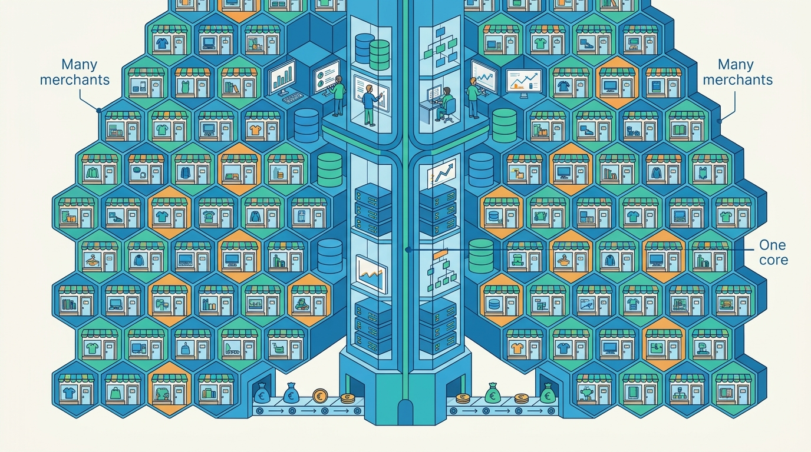

Part XI — PRACTICE: How Others Built It
Case: Shopify, the Modular Monolith That Serves Millions of Merchants
AI-assisted: researched and written with Claude Code and Codex; illustrations generated with Gemini and OpenAI image tools. How this works
